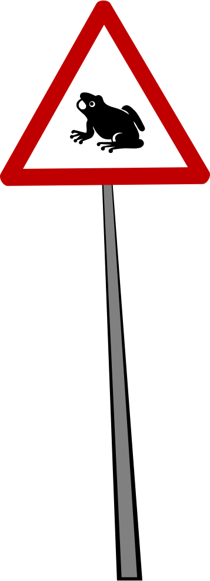
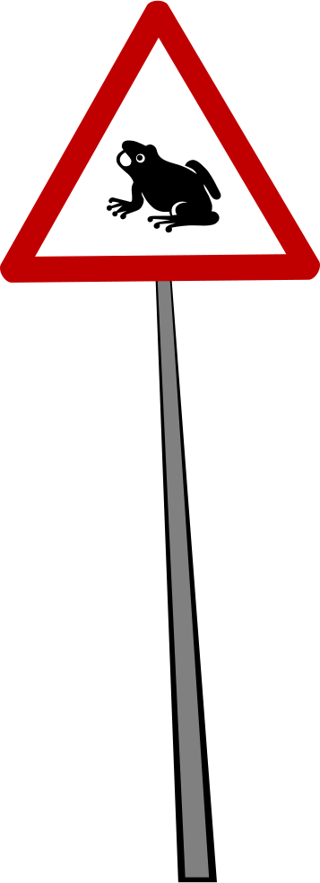
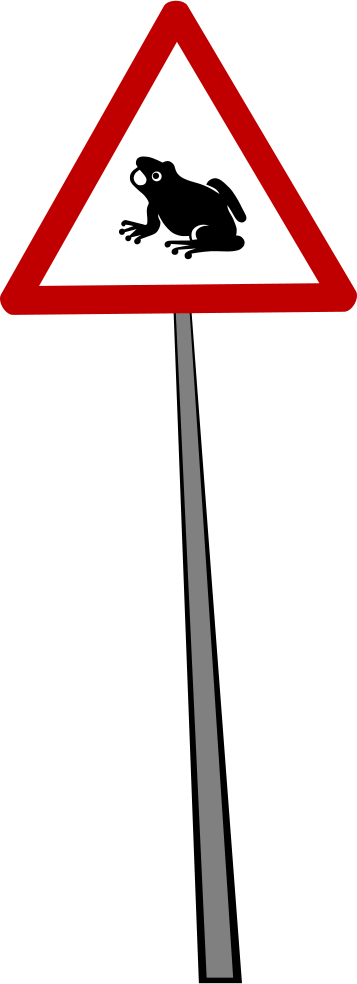

Spatio-Temporal Reasoning about Traffic Scenarios
Commonsense 2013

Knowledge-Based Systems Group
RWTH Aachen University
Commonsense 2013
$\ntg(\b,\c) = \frac{x(\c) - x(\b)}{v(\b)}$
$\ttc(\b,\c) = \frac{x(\c) - x(\b)}{v(\b) - v(\c)}$
ntg(b, c) 0 ntg(c, b) 0 ttc(b, c) 0
ntg(b, c) 0 ntg(c, b) 0 ttc(b, c) 0
ntg(b, c) 0 ntg(c, b) 0 ttc(b, c) 0
ntg(b, c) 0 ntg(c, b) 0 ttc(b, c) 0
ntg(b, c) 0 ntg(c, b) 0 ttc(b, c) 0
ntg(b, c) 0 ntg(c, b) 0 ttc(b, c) 0
NTG + TTC tell us how two cars interrelate
Given: chain of NTG + TTC measurements
Want: all NTG + TTC pairs
Similarly $\small \antg_2(\b,\c,q)$, $\small \attc_2(\b,\c,q)$ for $\small \c$ accelerating.
Reiter's Situation Calculus:
Successor State Axiom for NTG:
\begin{align*} & \NTG(b, c, r, \m{do}(a, s)) \equiv{}\\ & \quad \exists t \, \left( a = \m{wait}(t) \wedge %\ttc(b, c, s) \neq 0 \wedge{} r = \ntg(b, c, s) - t \cdot \tfrac{\ntg(b, c, s)}{\ttc(b, c, s)} \right) \; \vee{}\\ & \quad \exists q \, \left( a = \m{accel}(b, q) \wedge %q \neq 0 \wedge{} r = \tfrac{1}{q} \cdot \ntg(b, c, s) \right) \; \vee{}\\ & \quad \NTG(b, c, r, s) \wedge \forall t \, a \neq \m{wait}(t) \wedge{} \forall q \, a \neq \m{accel}(b, q) \end{align*}$\TTC$ analogously.
Our approach:
Driving Simulator:
Plan Recognition System:
Goal: execute program in a way that matches observed NTG + TTC with model NTG + TTC
Conclusion:
Future work: